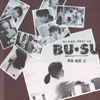
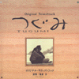
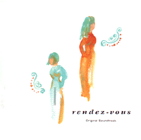
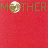

strange music page
japanese strange music * * * anime,image album, etc...
#漫画のイメージアルバムとか、変な企画ものとか、サントラとかです。やっぱ市川準監督の(音楽はKILLING TIMEの板倉文)やつとか良いですね。結構最近のアニメのサントラとか、面白そうな(菅野よう子とか今堀恒雄とか)人がやってたりするのであなどれないです。でもあんま買ってない。
- movie's original soundtrack
- catoon's image albums
- t.v. programm soundtrack
- animation's soundtrack
- game musics
- others
#江口寿史と大友克洋のアニメ"老人Z"のサントラ。参加メンバーはほとんどKilling Time状態です。アニメの方は見たことが無いのですが、どこでこんな曲使うんだろう？といった感じの曲も結構あります。
- 宣誓
- Ｚ [Accepter]
- 挨拶 #1
- Happy Circle [Opening Title]
- Impressions of a MOMENTO
- Interlude - Hello Liddy
- Metabolism #1-#4
- 挨拶 #2
- Ornament Love
- New Type
- Escapass
- Interlude～Hustle Mustle→A(W.T.D.)...Wild Todays's Description
- Spring
- Stepping Smart [#1 Dark House, #2 Chase]
- Interlude - Hollow Dolly
- 夢の桟橋 [#2 Evening]
- 走れ自転車 [Ending Roll]
- 板倉文 (guitars,synthesizers)
- BAnaNA-UG (synthesizers,piano)
- 青山純 (drums,percussions)
- ma*to (programming,keyboards)
- WHACHO (percussions)
- 近藤達郎 (keyboards)
- 栗山昭彦 (keyboards)
- 訳有頭 (bass)
- 斎藤ネコ (strings)
- 小川美潮 (vocals)
EPIC SONY RECORDS: ESCB-1258 (1991.11.21)
#アニメ映画のサントラです。クレジットには無いですが、Killing Timeのメンバーが参加しているはずです。今聴くと逆に古っぽさがいい感じに聴くことができます。
- Out of the Door
恋のときめき
- Holy light
Running
- メランコリー"ジンタ"
水曜日の午後
- 安らぎ
予感
- 驚愕
センチメンタル
- 主題歌"メランコリーの軌跡"
- 桜の花びら
舞踏会
- 目覚め
記憶の瞬き
- Power of Love
メランコリー"ジンタ"Part 2
青い季節
- BGM #1,#2
- BGM #3,#4
- BGM #5,#6,#7
Kitty records: H30K-20026 (1986)
#市川準監督、富田靖子主演の映画"BU-SU"のサントラ盤です。こないだ久しぶりにビデオを借りて見てみました...なんだか富田靖子可愛かったです、地味で。
ミョーなアレンジのBGMが多いです、ちょっと不安げでノスタルジックな。映画中ではKILLING TIMEの曲とかも使われていました。

- 花のまち
- あじさいのうた
- 朝の地下鉄
- ランニング
- エナジー
- オーバーチュア
- 花のまち
- 昼下り倉庫にて (台詞入り)
- 森下麦子
- 今 これから
- 窓の中の孤独
- 出会い
- 炎の向うに
- Tonight's the night
composed: 板倉文 (excerpt 1.2.7.14.)
arrangement: 板倉文 (excerpt 2.14.)
VICTOR: VDR-1463 (1987)
#吉本ばなな原作、市川準監督の映画"つぐみ"のサントラ盤。ストリングス中心の音ですが板倉文さんらしい懐かしさを感じさせる音が多いです。

- おかしな午後
- Overture
- Titleback
- 遥かなるもの
- Stay
- 別れ
- I hate background
- 病院へ向かう足
- 穴
- 燃えあがる水
- 衝動
- 美術館
- 海の愛しさ
- 板倉文 (guitars,strings instruments,keyboards)
- BA NA NA (keyboards)
- MECKEN (bass)
- 青山純 (drums)
- グレート栄田strings (strings)
- 斉藤ネコカルテット (strings)
- 三戸strings (strings)
- 高桑英世 (flute)
- 杉原直基 (oboe)
- 十亀正司 (clarinet)
- 中島大之 (horn)
- 高野哲夫 (horn)
- 井上俊次 (fagot)
- 石井明 (synthesizer operater)
- Ma*To (synthesizer operater)
- 大阪正 (synthesizer operater)
- 小川美潮 (vocals)
EPIC/SONY RECORDS: ESCB-1099 (1990)
#TBSのドラマ、ランデヴーのサントラです。現時点で聴ける板倉さんの最新のCDです。なんかちょっと曲想にバリエーションが増えたような...でもノスタルジックな雰囲気は相変わらず、12月のKILLING TIMEのライヴが楽しみです、これからの活動も。

- Oriental feast
- 愛の桟橋
- altality -mislay-
- three minutes boy
- MY LITTLE SILLY THING
- Strive for happiness
- 運河のほとりにて -出会い-
- Oriental feast -silence-
- Lazy feline
- altality -recollection-
- 運河のほとりにて -想い-
All Songs Composed and Arranged by 板倉文
- 板倉文 (guitars,bandolin,piano,percussions)
- 河辺健宏 (bass,guitars,piano,keyboards,percussions,programming)
- 川島裕二バナナ (prophet-5)
- 高木真由美 (keyboards)
- 旭孝 (pan flute)
- Mac清水 (percussions)
- 斎藤ネコ (1st violin)
- グレート栄田 (2nd violin)
- 山田雄司 (viola)
- 矢島富雄 (cello)
- ウヨンタナ (vocals)
- 柚楽弥衣 (vocals)
WERNER MUSIC JAPAN: WPC6-8507 (1998.9.5)
#みずき健さんと言う方の漫画のイメージアルバムらしいです。アルバムの前半は谷山浩子さんの曲をZabadakの上野洋子さんが歌ったものと、石井AQさんのインスト。後半はドラマみたいなのが入っています。
- MORNING TIME
- 空色飛行
- 恋人
- モザイク回廊
- COTTON COLOR
composed:
track 1.3.5. 谷山浩子
track 2.4. 石井AQ
lyrics:
arrangement:
track 1-5. 石井AQtrack 6-13. Image Drama
東芝EMI: TYCY-5120
#日渡早紀さん（漫画家）のイメージアルバム、曲によって参加しているグループがありますが、とても沢山の方が参加しています。なんだかすっごい安い値段で売ってたりするので、参加メンバー見て気になる人は要チェックかも。
- 1991 Tokyo
- green 緑のささやき
- あ・ぶ・な・い Bubble Boy -輪-
- 月のきざはし -ありす-
- V.S. ESP Power
- Moon Light Anthem -槐1991-
- Prelude -黎明
- Fuga -星間戦争
- Scene -キーワード
- Etude -転生幻想
- Aria -紫苑と木蓮
- In Paradisum -転生
- "楊矢夫人"へおいでませ
- Misty 50
- 魔界のカーニバル
- Siva -佇む人-
- 少年よ、天使をめざせ
- Amuka in Love -Love is a many splendored thing-
- ホワイト・ミニオン☆ブラック・ミニオン
- カイエ
- ジョバンニくんの透明な哀しみ
- Ride on the Dragon -魔法★Bitter-
- 夢みる翼
- Misty 50 (Reprise)
- Amuka in Love -Love is a many splendored thing- (reprise)
- 野見祐二 (composed,arrangesd,programming on 1.5.7-12.)
- 遠山淳 (synthesizers)
- 溝口肇 (composed,prorgramming,keyobards on 2.3.)
- れいち (drums,percussions on 2.3.)
- 渡辺等 (bass on 2.3.)
- ma*to (synthesizers on 2.3.)
- 金子飛鳥quartet (strings on 2.3.7-11.)
- 渡辺辰徳 (cello on 2.3.)
- 大貫妙子 (composed,vocals on 4.)
- 門倉聡 (piano on 4.)
- Hayashi Hideyuki (synthesizers on 4.)
- 新居昭乃 (chorus on 4.)
- Hata Yayoi (vocals on 7.)
- Moriya Mitsuki (vocals on 11.)
- Adachi Satsuki (chorus on 7-11.)
- Numata Eri (chorus on 7-11.)
- suganuma miho (chorus on 7-11.)
- Matsutani Kazue (chorus on 7-11.)
- Yoshida Keiko (chorus on 7-11.)
- Hirano Yoshiko (piano,celeste 7-11.)
- Oishi Saburo group (winds,brass 7-11.)
- 山川恵子 (harp on 7-11.)
- 矢口博康 (composed,programming,sax on 13-25.)
- 福原まり (keyboards on 13.)
- 鈴木さえ子 (compsoed,keyboards,chorus on 14.)
- 遊佐未森 (chorus on 20.)
- MIKAN-chang (vocals on 16.)
- 上野耕路 (composed,programming,keyboards on 18.21.25.)
- 金津ヒロシ (percussions on 15.)
- 戸田誠司 (12-strings guitar on 23.)
- 中西俊弘 (violin on 19.)
Victor: VICL-40075,76 (1992)
#これはUGTKさんに見つけて頂いた、お茶の間というTV番組(その番組知らなかったです)のサントラです、1,5,9曲目はBAnaNA-UGさんです。めっちゃクールで格好良いです。他も小林靖宏とか越智義朗とかDate of Birthの人とか、わりと良さげな人たちが参加してます。主題歌の安全地帯はとくにどうでも良かったりするのですが。(1999.5.29)
- GAM
- ANDIAMO IN MONTAGNA - FUNICULI FUNICULA -
- WINDFAIRY
- CIRIBIRIBIN
- MIRAGE
- MISS ANOTHER DAY
- KALIMBA SONG
- AMORE INFINITO - TE VOGIO BENE ASSAIE -
- dim-moll
- ひとりぼっちのエール (安全地帯)
- BAnaNA-UG (synthesizers on 1.5.9.)
- MECKEN (bass on 1.5.)
- 板倉文 (guitars on 1.)
- 青山純 (drums on 1.)
- 矢壁篤信 (percussions on 1.)
- MAC清水 (percussions on 1.)
- 藤井将登 (programming on 5.)
- 小林靖宏 (accordion on 2.8.)
- 越智義朗 (percussioins,bell,tom tom on 3.)(kalimba on 7.)
- 越智義久 (djembe,kogili on 3.)(kalimba on 7.)
- ゴンザレス三上 (ukulele on 3.)
KITTY RECORDS: KTCR-1223 (1993.3.10)
#えーとよしみさんありがとうございました。
8曲目と11曲目が板倉文なんです、もー間違い無いほどの板倉文な曲です、良いです。どーせ売ってれば安いはずなんで、見かけたら買うべし。あとRaさんも曲書いてますね。(1999.8.12)
- The War
music by 佐久間正英
- Eden
- The Power of Will
- The Megalopolis Eden
- The Dead Town
music by Ra
- The Forbidden Library
music by 佐久間正英
- The Black Peace
- ボレロ
music by 板倉文
- 音声吸引機のテーマ
music by Ra
- Contortion
- ボルヘス老人のテーマ
music by 板倉文
- Love Warriors
- 悲しみの王子
- Sing a Little Love Song
- Love Comes to Town
- Eden (Reprise)
WARNER PIONEER: WPCL-150 (1990.4.25)
- OLE ORA
- 風の虚言～ぼくらの休日～
- Ballad #3
- CARMEN REMIX
- 風の虚言～きまぐれな空に向かって～
- Blue in Twilight
- HABANERA
- WALTZ #5
- 君がいない<TV version>
- 君がいない<instrumental>
- 風の虚言～街はカーニバル～
produced by 近藤由紀夫,小西香葉
composed by 清水一登 (3.6.10.)
composed by Georges Bizet (4.10.)
track 3.
- 清水一登 (piano)
- 向島ゆり子 (violin)
track 4.
- 清水一登
- 藤井将登 (synthesizer programming)
track 6.
- 清水一登 (piano,bass clarinet,marimba,synthesizer)
- 向島ゆり子 (violin)
track 9.
- 清水一登 (piano,bass clarinet)
- れいち (drums,percussions)
- 松本治 (trombone,trumpet)
- 浦山秀彦 (guitars)
- 向島ゆり子 (violin)
- 渡辺等 (bass)
track 6.
- 清水一登 (piano,marimba)
- 向島ゆり子 (violin)
B-Gram RECORDS: BGCH-1002 (1993.6.30)
#数曲、清水一登さんの曲が有ります。曲を逆回転させたよーな不思議な進行の曲で相変わらず面白いです。なんかストリングの曲(13)とか板倉文さんの影響が有るような....
他の曲はMaire Breatnachさんがほとんどで、アイリッシュトラッドっぽい曲です。清水一登さんのトラックとは随分雰囲気が違いますけど、こっちも結構良いです。
6曲目の「たしかめていてよ」は鈴木祥子さんの曲です。結構好きな曲。
ちなみに日本テレビのドラマだったらしいですけど、全然見てません。佐野史郎とか出てたみたい。(2002.1.13)

- HOME
- FANATIC LOVE-I
- PLACEBO
- IN THE BLOWING WIND (move)
- SOLITUDE
- たしかめていてよ (piano version)
- Q SIGN
- PASSION
- CROSSROADS
- 3階のベランダ
- PEACE & BROKEN
- FANATIC LOVE-II
- OCCUPATIONAL HAZARD
- DEEP RIVER
- たしかめていてよ (instrumental version)
- HOME, AGAIN
- IN THE BLOWING WIND (still)
Maire Breatnach (1.2.4.5.8.9.12.16.17.)
清水一登 (3.7.10.13.)
鈴木祥子,奥田民生 (6.15.)
MOKA (11.)
竹下欣伸 (14.)
WARNER MUSIC JAPAN: WPC6-8494 (1998.8.26)
#矢田亜希子のドラマのサントラです、ドラマは（全部見てないんだけど）矢田亜希子のインパクトの弱い感じがあいまって近年まれに見るまったりとしたドラマで、自分は割と好きでしたけど。
で、テーマ曲がとても気に入っていてサントラ出たっつーんで買ってきました。音楽担当は窪田ミナと言う方で英国国立
- プティ・エトワールのテーマ
- 健作と藤堂のテーマ
- キッチンは小さな戦場
- おかしな三人
- 健作のテーマ
- 瀬理の願い事
- A Box of Caramel
- cuisiniere
- 幸せの魔法
- 落ち着かない足音
- voyage ～piano solo instrumental～
- 不思議なキッチン
- The Herb Called Seri
- 転がるコルク
- Caramel
- ワインとスーシェフ
- Voyage ～piano trio instrumental～
- 瀬理のキッチン ～厨房のテーマ
- 気まぐれなカーブ
- The Little Agent ～名津菜のテーマ
- 星を見上げて
- My Little Chef ～瀬理のテーマ
produced by 窪田ミナ
- 窪田ミナ (piano,conductor)
- 杉野裕グループ (strings)
- 相馬充 (flute)
- 石橋雅一 (oboe)
- 星野正 (clarinet)
- 大畠篠亮 (fagot)
- 松田俊太郎 (horn)
- 大石真理恵 (percussion)
- 高良久美子 (percussion)
- 水野弘文 (accordion)
AVEX TRAX: AVCD-17193 (2002.9.4)
#坂本龍一です、この人なんか自分のアルバムよりもサントラの方が格好良いように思います、ただ単に自分好みなだけかもしれないですけど。野見祐二と上野耕路と窪田晴男が参加してます。
そういえば、このアニメ結構好きでした。たしかGAINAXの最初の方の作品だったと思いますけど、なんかドライな雰囲気がとっても感じよかったように覚えてます、ずいぶんむかしですけど。
- メインテーマ
- リイクニのテーマ
- 国防総省
- 喧騒
- 無駄
- 歌曲「アニャモ」
- グノォム博士の葬式
- 聖なるリイクニ
- 遠雷
- シロツグの決意
- 最終段階
- 戦争
- 離床
- OUT OF SPACE
- FADE
composed by
坂本龍一 (1.2.3.4.5.8.13.14.15.)
上野耕路 (7.9.12.13.)
窪田晴男 (10.12.)
野見祐二 (6.8.11.)
MIDI/SCHOOL: MDCL-1247 (1987)
#Windows95用のソフト"TEO"のイメージアルバムです。何か不思議なメンバーですが、久々に小川美潮さんのうたが聴けます。
- TEO -もう一つの地球-
- フィンフィンの時計
- フィンフィン・ソングブック
- 不思議のTEO
- 赤木忠治 (compose,arrangement)
- 上野洋子 (vocals on 1.)
- 竹中俊二 (guitars on 1.)
- 北田万紀 (bass on 1.)
- 平賀淳一 (synthesizers on 2.3.)
- 小川美潮 (vocals on 4.)
- 近藤達郎 (synthesizers on 4.)
- 大川俊司 (synthesizers on 4.)
POLYSTAR: PSCR-5512 (1996.6.26)
- BLUE
- WORDS THAT WE COULDN'T SAY
- AUTUMN IN GANYMEDE
- MUSHROOM HUNTING
- GO GO CACTUS MAN
- CHICKEN BONE
- THE REAL MAN
- N.Y.RUSH
- ADIEU
- CALL ME CALL ME
- AVE MARIA
- STELLA BY MOOR
- FLYING TEAPOT
- WO QUI NON COIN
- ROAD TO THE WEST
- FAREWELL BLUES
all music & arranged by 菅野よう子
VICTOR ENTERTAINMENT: VICL-60203 (1999)
#テレ東のアニメ、トライガン(見たこと無いけど)のサントラ。音楽は
tipographicaの今堀恒雄です。
前誰かが「かっこいい」とか言ってたんで気になってたんですけど、今更購入。武蔵小杉の駅前のビルで\2,200でした。
てゆーかスゴイです。面子もスゴイですけど、それに見合うだけの内容。techno/jazz/drum'n'bass/rock/何でも有り？それでもアニメのサントラ。tipographicaを想像して買ったんですけど、ちょっと騙されました。もちろん良い意味で。(1999.7.1)
- NO-BEAT
- BIG BLUFF
- BLOOD AND THUNDER
- KNIVES
- Parmanent Vacation
- BLUE FUNK
- PHILOSOPHY in a Tea Cup
- NOT AN ANGEL
- Cynical Pink
- Sound Life ～LEM
- 風は未来に吹く
- H.T
- WINNERS
- Never could have been worse
- Stories to Tell
- People Everyday
- Fool's Paradise
- YELLOW ALERT
- Carot & Stick
- Perfect Night
- 今堀恒雄 (guitars,programming)
- 沖山優司 (bass)
- 菊地成孔 (sax)
- 鶴来正来 (piano)
- 大儀見元 (percussions)
- 水谷浩章 (bass)
- 高桑英世 (flute)
- 四家卯大 (cello)
- 湊正史 (drums on 12.)
- Suzuki Michiaki (bass on 12.)
VICTOR ENTERTAINMENT: VICL-60241 (1998.6.24)
#こっちはなんかちょっとアニメの企画盤みたいな感じかな？ちょこちょこ挿入されるラジオドラマみたいなんが...アニメ見たことないので何だかわからないです。
- ラヴ＆ピーズ
- Nerve Rock
- 楽園
- ウエスト・スラング
- Unhappy Song
- 黒猫空間
- Colorless Sky
- トライガン・マキシマム
- Hash Hash
- Lost Planet
- Blue Spring
- H.T - Destroyingangel mix
- Zero Hour
- Insurance #1
- The lowdown
- Insurance #2
- Gunpowder Tea
- Insurance #3
- Cheers!
- Scattlered Rain
- ピアス
- Blue Summers
- 砂の星
- 今堀恒雄 (guitars,programming)
- 外山明 (drums on 2.)
- 佐野篤 (bass on 2.)
- Tim Jensen (vocals on 3.)
- Onosaka Masaya (voice on 5.)
- 湊正史 (drums on 9.)
- 鈴木道明 (bass on 9.)
- 十亀正司 (clarinet on 10.)
- Narita Keiko (clarinet on 10.)
- Itoi Yumiko (oboe on 10.)
- Takano Shigemoto (flute on 10.)
- Okamoto Masayuki (fagotto on 10.)
- 鶴来正来 (piano on 17.)
VICTOR ENTERTAINMENT: VICL-60286 (1998)
#妙味。カッチョイイ曲も有れば、サントラな曲も有って。
- irradiation
- Sandy
- in the mirror
- desert life
- Temple of prey
- DING DONG BAND
- inorganic
- PYTHON
- country cousin
- Pierette
- Before crisis
- naked Fang
- Nightmare
- silent eyes
- motherhood
- Is It Candy?
- shadow
- Friday night show
- twitter
- At Last
- dread
- so far
- jungle
- curious posy
- 今堀恒雄 (guitars)
- 佐野篤 (bass)
- 吉野弘志 (wood bass)
- 外山明 (drums)
- 鶴来正来 (piano)
- 菊地成孔 (tenor sax)
- Sugasaka Masahiko (trumpet)
- 荒木敏男 (trumpet)
- Yamashiro Junko (trombone)
- 松本治 (trombone)
- Bob Zung (flute,clarinet)
- 高桑英世 (flute)
- Shoji Tomofumi (english horn)
- Sano Kiyoshi (tuba)
- 笠原あやの (violin,cello)
- 清水一登 (marimba)
- 大儀見元 (percussions)
VAP: VPCG-84729 (2001.3.16)
#んーと、zabadak系の人々大参加です。ゲーム系シンフォニック/トラッド/女性ボーカルなアルバムです。確かに力作かも。ちょっとプログレ寄り。
- MELKABA
- 二つの羽根
- BALTO
- CREID
- DAJIL
- 光の階段
- 神無月の人魚
- 春の子守歌
- LAHAN
- メビウス
- 光田康典 (music,keyboards)
- 本間哲子 (vocals)
- 上野洋子 (vocals)
- 小峰公子 (vocals)
- 渡辺等 (bass)
- HATA (guitars,sitar)
- 吉良知彦 (bouzouki,guitars)
- Davy Spilane (pipes,low whistle)
- Laurie Kaszas (tin whistle)
- 素川欣也 (尺八,篠笛)
- 近藤治夫 (bag pipes)
- Maria Kalaniemi (accordion)
- Anne-Marie O'Farrell (celtic harp)
- Laoise Kelly (celtic harp)
- Maire Breatnach (fiddle)
- 藤井珠緒 (percussions)
- KALTA (drums,programming)
SONY RECORDS/Digicube: SSCX-10018 (1998.4.22)
#山口優(ex-EXPO)の音楽担当のゲームのサントラ。やった事ないけど、結構有名なゲームみたい。一言で言うとマヌケテクノかな？ ま、大好きなんですけどねコレ。馬鹿でもダメでもなくて、マヌケな音ってなかなか狙って出せる物でもないと思いますけど。楽しいですよ、このCD。(1999.6.23)
- ...Awake
- PiT Start
- PiT Theme
- PiT and Egs
- PiT Cylindres
- PiT Drive
- PiT Consequence
- PiT Shagg
- PiT @ Home
- PiT Fragments
- PiT 1993
- PiT Tour
- Pit in Daydream
- Pit Theme Again
- ...Away
- 山口優 (composed,all instruments)
- 今堀恒雄 (electric guitars)
- 高井康夫 (acoustic guitars)
- 森川幸人 (electric guitars on 14.)
- 天川ひとみ (kazoo,vocals on 14.)
- 坂本和也 (drums on 14.)
- 松原卓二 (kazoo on 14.)
- 二木康夫 (tambourine on 14.)
- 三宅治子 (cabasa on 14.)
MEDIA RINGS: MGCD-1041 (1997)
#こんなの有ったんですね、弟の部屋から発見。デラウェアとバッファロードーターによるゲーム音楽のサントラ。気の抜けたよーな曲多いです。フツーのアルバムには入らないような変な曲（の断片）とか入ってるのが面白かったです。ほとんど実験音
楽（もしくはアイディアテープ）
まぁ、わざわざ探して買うほどじゃないけど。
- エントランス
- スロットレース
- アイスクリームでも食って忘れちまえ
- 春
- SOUVENIR SHOP
- 夏
- 考えすぎは考えが足りない
- 頭まで毛布をかぶって
- ほら穴
- 冬
- CHESS GUN
- DOWNHILL
- サルとシロナガスクジラ
- I Wanna Be Your SITAR
- ジャングルパークのテーマ
- 60000 (TRIKO)
- バルーン
Buffalo Daughter (1.2.4.6.9.10.13.15.16.17.)
- 山本ムーグ
- 大野由美子
- シュガー吉永
- Matsushita Atsushi (drums)
- パードン木村 (logic audio)
- Asano Masakazu (drum programming)
DELAWARE (3.5.7.8.11.12.14.)
- Samata Masato
- Honda Aya
- Tajiri Motohiro
- Ten
DIGITALOGUE: SSCX-10100 (1997.8.21)
#たぶん再発を待ち望んでた人多かったんじゃないかなー？ファミコンゲームMOTHERのサントラ、プロデュースは鈴木慶一。
一番聴きたかったのは9曲目「Fallin' Love, and」って曲。アレンジ斎藤ネコでのインストですが、メンバーは見ての通りのKILLING TIME+α。凄くイイです。このメンツ見てピンと来る人はそれだけで買ってもイイんじゃないかな？（pianoのクレジットに SAITO NAOKO って有るけど、たぶん江藤直子さんだよね？間違ってたらゴメンなさい）
あとは（またインストだけど）「Snow Man」って曲もイイなぁ。ムーンライダーズにもこのゲームにも思い入れ無いんですけど、スーっと拡がってくよーなメロディーとか、凝ったアレンジとか（有名な話かも知れないけど、EIGHT MELODIESはアレンジMichael Nyman）。この時期のゲームのサントラとしては物凄く時間と金かけて作ってるのがわかります。(2004.2.23)

- Pollyanna (I Believe In You)
- Bein' Friends
- The Paradise Line
- Magicant
- Wisdom Of The World
- Flying Man
- Snow Man
- All That I Needed (Was You)
- Fallin' Love, and
- Eight Melodies
- The World Of MOTHER (Extended Version)
- Smiles And Tears (Demo Track)
- 鈴木慶一
track 9.
- 清水一登 (piano)
- えとうなおこ (piano)
- 横山雅文 (bass,guitars)
- 青山純 (drums)
- 板倉文 (mandolin)
- Whacho (percussions)
- Ma*To (percussions)
- 篠田昌巳 (sax)
- 村田陽一 (trombone)
- れいち (chorus)
- 斎藤ネコカルテット (strings)
- JOEカルテット (strings)
SONY MUSIC DIRECT: MHCL-341 (original release 1989)
#ずいぶん昔に買ったやつで、聞きなおしてみたら結構良かったです。アレンジものなんですが、それぞれの個性が出てて面白いです。元pizzicato fiveの鴨宮諒さんとか結構意外なアレンジしてるし。あと、やっぱ福原まりさん。大好きです。昔、宮沢賢治けっこう好きでした、懐かしいです。
- 星めぐりの歌 /裕木奈江・細野晴臣
- 黎明行進歌 /近藤達郎
- 角磔行進歌 /コシミハル
- 種山ヶ原 /久米大作
- 火の鳥の歌 /ASTRO AGE STEEL ORCHESTRA
- 一時半なのにどうしたのだらう～糧食はなし四月の寒さ /エヴリシング・プレイ
- 剣舞の歌 /清水一登
- 耕母黄昏 /駒沢裕城・あがた森魚
- 牧歌 /清水靖晃
- 星めぐりの歌 /近藤達郎
- バナナン大将の行進歌 /近藤達郎
- 北ぞらのちぢれ羊から～イギリス海岸の歌 /野澤美香
- 牧者の歌 /コシミハル
- ポランの広場 /清水一登
- 月夜のでんしんばしら /エヴリシング・プレイ
- 応援歌 /近藤達郎
- 精神歌 /福原まり
- 大菩薩峠の歌 /鴨宮諒
- 飢餓陣営のたそがれの中 /久米大作
- 星めぐりの歌 /Bruce Cockburn
SONY RECORDS: SRCL-2800 (1993.11.21)
#横浜HMVにて、岡村隆史の映画"無問題"(モウマンタイと読むらしい)のサントラ。ちなみに映画は見てないです。
音楽担当は福原まり、もう個人的には参加メンバー見ただけでニヤニヤしちゃいそうなアルバムです。13曲目(2曲目)とか、すごい福原まりさんらしいピアノの響きが綺麗な曲です。

- Desire
- Romance -short version-
- 夜の月 (moon rises)
- 玲子 (Leiko)
- Cembalo March
- 流青 (She is...)
- Useless Lesson
- The Perfect Lover (剛剛好 -inst version-)
- A Strange Man
- Drugstore
- 乱闘 (Party Crush)
- Dance
- Romance -full version-
- 剛剛好 -half size-
BONUS TRACK
- 愛的替身
- 大丈夫
- 福原まり (piano,accordion,programming)
- 中原信雄 (bass)
- Shimoyama Jun (guitars)
- 近藤達郎 (organ)
- れいち (drums)
- Whacho (percussions)
- 矢口博康 (sax,clarinet)
- 松本治 (trombone)
- Sugasaka Masahiko (trumpet)
- グレート栄田Strings (strings)
- Watanabe Takashi (programming)
on track 15.
- Nakamura Syuji (guitars)
- Tashiro Kouichiro (guitars)
- 美久月千晴 (bass)
- 江口信夫 (drums)
- Mukai Seiichiro (chorus)
- 岡村隆史 (vocals on 12.15.)
- Jessica Sung (vocals on 14.16.)
POLYDOR: POCX-2004 (1999.11.10)
#なんだか会社の先輩がかけてて、「なんか聞き覚えの有るストリングスだなぁ～」とか思ったらやっぱり、そうでした。図書館で借りてきたんだって。
えーと聴く絵本の類です、「お話」のしみじみとか感動とかって自分にはわからない感覚なんですけど、えとうなおこさんのピアノのラス曲は良すぎ。(2002.8.1)
- 100万回生きたねこ[エピローグ]
- 100万年もしなないねこがいました・・・
- あるとき、ねこは王さまのねこでした・・・
- あるとき、ねこは船のりのねこでした・・・
- あるとき、ねこはサーカスの手品つかいのねこでした・・・
- あるとき、ねこはどろぼうのねこでした・・・
- あるとき、ねこはひとりぼっちのおばあさんのねこでした・・・
- あるとき、ねこは小さな女の子のねこでした・・・
- あるとき、ねこはだれのねこでもありませんでした・・・
- どんなめすねこも、ねこのおよめさんに・・・
- たった1ぴき、ねこに見むきもしない、白いうつくしいねこが・・・
- ある日、ねこは、白いねこの前で・・・
- 白いねこは、かわいい子ねこを・・・
- やがて、子ねこはたちは大きくなって・・・
- ある日、白いねこは、ねこのとなりで・・・
- ねこはもう、けっして生きかえりませんでした[プロローグ]
- 大竹しのぶ (朗読)
- 斉藤ネコカルテット (strings)
- えとうなおこ (piano)
- 石井AQ (synthesizers)
東芝EMI: TOCT-9124 (1995.8.23)